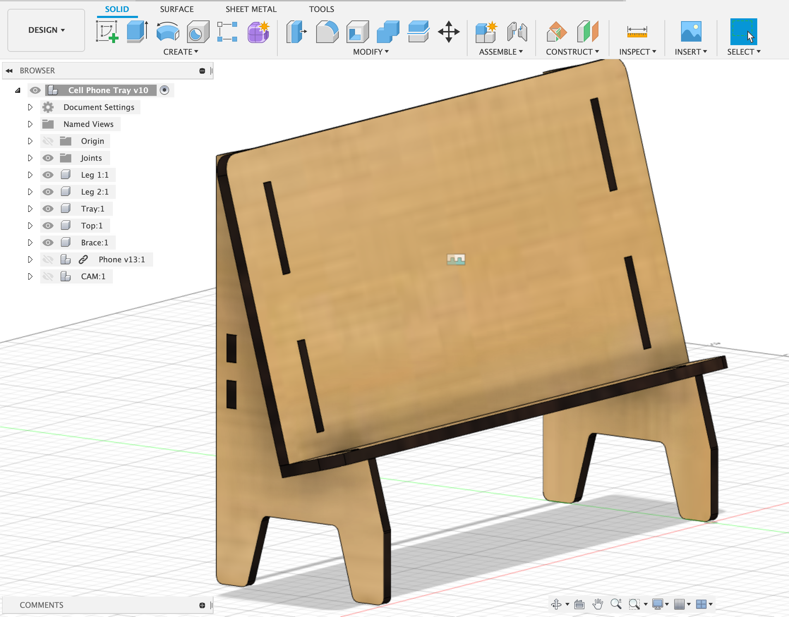
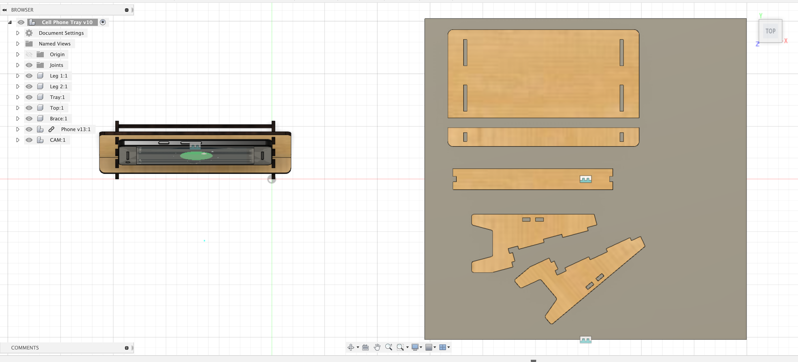
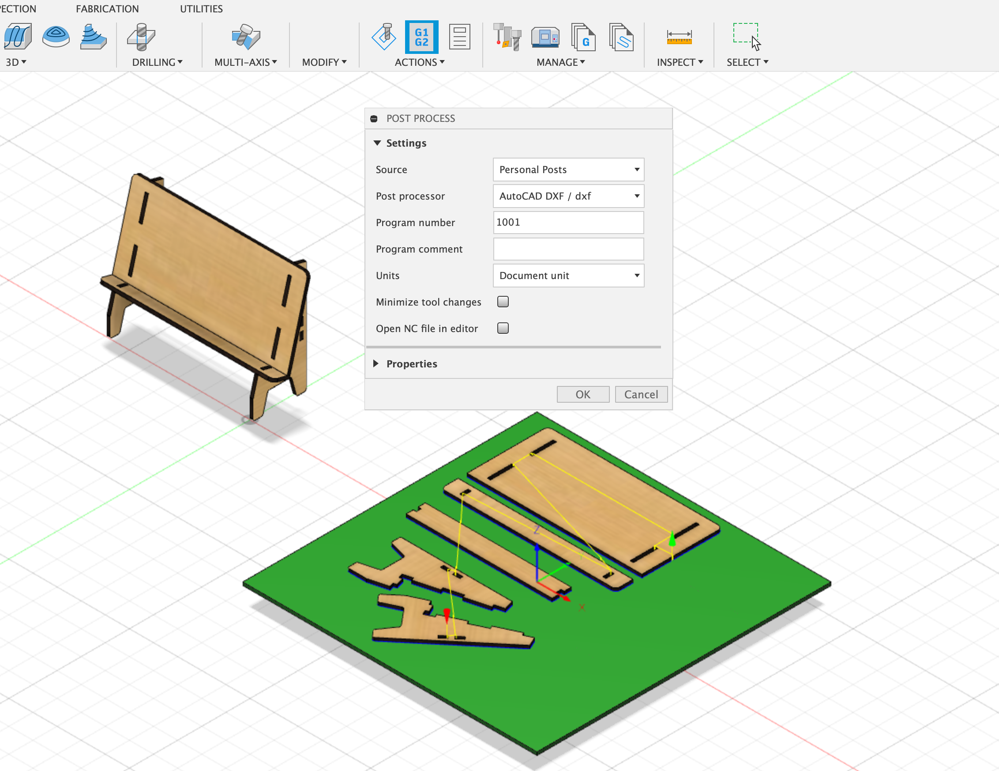
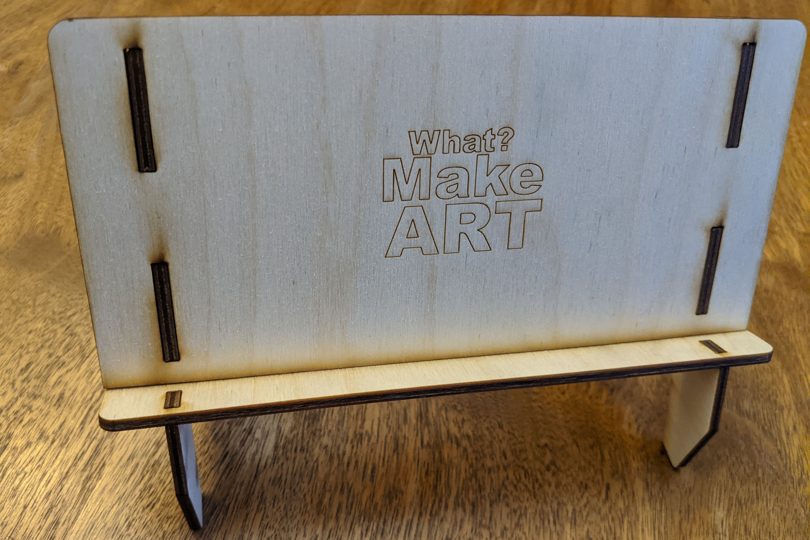

Using your sketches, cardboard model, and third angle projections, make a model of your laser cut stand in Fusion 360. Each piece of the project should be a separate component. This is necessary to be able to lay the parts out flat in Fusion 360 to produce and export a DXF cut file for use on the laser cutter. You will need to make a laser cutter tool in Fusion 360 and install a DXF post processor to produce a DXF file of your tool paths. There are video instructions below showing how to make a laser cutter tool and how to install the DXF post processor.
This project introduces custom user parameters in Fusion 360. These are like variables for dimensions that we can change and have the model update automatically. You are required to use at least one user dimension for “ply” or the thickness of the material you are cutting. Materials vary in width, so we will measure the material before cutting on the laser cutter. When we know the real thickness of the material using digital calipers, then we can change the “ply” variable and the model will produce an accurate cut file.

Physical Prototype of Laser Cut Cell Phone Stand cut at think[box]
Process
1. Model Stand in Fusion 360
If you prefer, you can import your third angle projection sketches to use as guides you start your first sketch. You need to calibrate the size of the sketch to be the correct scale in your Fusion 360 file. Then you can use the sketch as a guide to create your digital sketch. This step is not necessary but some may like it. This video shows how to import an image as a canvas in Fusion 360.
If you are making detailed organic forms or drawing an image to use as the contours of the sides or other parts of your stand it can be difficult to draw complex shapes and images in Fusion. You can draw you image or character in Illustrator and export it as an SVG or DXF. Then you can import that file into Fusion 360. Once in fusion the file acts as a sketch and you can extrude it right away to be a piece of your model. This workflow is better than drawing a complex organic form in Fusion.
Remember to make a new component at the top level of you model for each part. The top level should be the “parent” of each of the other components. The components should be at the same outline level in the browser and not nested inside each other.
Think about how your pieces will hold together.
- Will you use captive nut joints?
- Will you use pinned finger joints?
- Will you use tabs and holes?
- Will you have bendable living hinges?
- Will you use snap clips?
Remember to add tabs and holes and any other design features needed to attach the different pieces. You can use the “Combine” modify action to cut out pieces using other pieces as “tools”.
Types of Laser Cut Joints
There are many ways to join a laser cut project together ranging from gravity to glue to bolts to snap pieces. You can use a variety of ways to connect. Here are some example images of different methods of joining pieces together. There are many more ways. Search the internet for other methods of making laser cut joints.

Box with finger joints on all sides

Snap joint pulled apart

Snap joint pressed together

Captive bolt / nut joints laid flat

Captive bolt / nut joint without aligning fingers

Captive bolt / nut joint with alignment tabs / fingers

Pinned finger joint with different pieces colorized

Pinned finger joint
Use User Parameters
Use a user parameter of “ply” so you can update your design after measuring your material. Use this dimensions in your sketches as a guide rather than typing in the thickness of the plywood as a hard coded value. This allows for updating. You can also make parameters for the device width, the size of bolt holes and any other feature that you might want to change or have a relationship to other features.
You can also use a user parameter for the inner width to space out pieces. Use user parameters for anything that you want to reference or update later.

Example User Parameters in Fusion 360

Example of each part of the stand as a separate component at the top level assembly in Fusion 360.
2. Layout a Manufacture Model Copy of All Pieces Flat for Cutting
Once your model is complete and each piece is a separate and labeled component, you are ready to lay your pieces flat to create a DXF toolpath file for the laser cutter.
Change to the Manufacture Workspace.
Create a Manufacture Model in the Manufacture Workspace. This model is like a linked copy of your Design Model. It allows you to lay your pieces flat with out moving your Design Model. If you make changes to your Design Model after you lay your pieces flat then your Manufacture Model should update automatically. This video shows how to make a Manufacture Model.
Draw a 12" x 12" sketch to represent your plywood. If you are using larger plywood or plexiglass then draw a larger sketch. If you are using a “remnant” or cutoff piece then draw your sketch to that size. Then use the Arrange command to lay your parts flat.
Follow the instructions in the video to arrange your parts flat. Note that the example model video uses the “joint” method to lay parts flat. You should use the updated method with the arrange command.

Top view of components of laser cut stand flat on plywood.
Top view of components of laser cut stand flat on plywood.
3. Install DXF Post Processor
Follow the instructions in the video below to install the DXF Post Processor from Autodesk. This will allow you to export your laser cut tool paths from Fusion 360 as a DXF file that you can open and edit in Illustrator. This is the link to the DXF Post Processor from Autodesk.
You can install it locally in Windows or Mac. Local install instructions.
You can install it in the cloud as well, then you can use it anywhere. Make sure to enable cloud libraries first. Cloud install instructions.
4. Create Laser Cut Tool in Fusion 360 with Specific Kerf
Follow the instructions in the video below to create a laser cut tool in Fusion 360. Make sure you enter a kerf of .127 mm since that is the kerf of the laser cutters at the think[box]. If your pieces do not fit correctly you can then adjust this tool in Fusion 360 to correct the kerf for your desired fit.
5. Create Toolpaths in the Manufacture Workspace
Follow the steps in this tutorial video to create a new setup in Fusion 360. This is done in the Manufacture Workspace. You need to create the laser cutter tool first. It is important to create a new “Cutting” setup so you can make a new 2D Profile to cut out.
![Laser Cut Stand Toolpaths](2021-Laser-Cut-Stand-CAM-Toolpaths.png
View of tool path layout in the Manufacture Workspace
6. Save your Tool Paths as a DXF via Post Process
Select the tool path from your setup and then click on post process. Use the DXF post process that you installed earlier to export a DXF file. Make sure to add the .dxf file extension.

Example of each part of the stand as a separate component at the top level assembly in Fusion 360.
7. Add appearances and Export Render
In Fusion 360 add appearances to you model as you wish and export a render. Label the file YYYYMMDD Lastname Firstname Laser Cut Stand Render.png/jpg
Make the model look the way you want the final product to look. If you are going to paint pieces then paint the pieces in the render. If you will have etchings then put an image decal on to represent the etchings.
Make sure your render is well composed and high resolution with at least one direction 4000px. Choose a 4:3 16:9 or 1:1 aspect ratio. You can make multiple render views.

Example of each part of the stand as a separate component at the top level assembly in Fusion 360.
8. Open DXF in Illustrator and Adjust Stroke
You need to change the stroke weight of the red strokes in Illustrator. Also you need to change the stroke color and weight of any strokes that you want to etch. You can also draw new strokes to etch while in Illustrator. Etched strokes need to be blue and .5. Make sure you scale the document 100% and have 1mm = 1mm.

Example of each part of the stand as a separate component at the top level assembly in Fusion 360.
Files to Upload to Google Drive
Make a labeled folder YYYYMMDD Lastname Firstname Laser Cut First Models and put the following files inside the folder. Label the individual files. Then upload the folder to the class Google Drive.
- Fusion 360 .f3d file
- Rendering(s) of project with appearances applied (.png or .jpg)
- Illustrator .ai file of the cut paths (cut with red stroke .001 weight and engraving with blue stroke .5 weight)
Google Drive Upload Folder
Instructional Videos
1. Model Laser Cut Cell Phone Stand
Model a Living Hinge Bend for Laser Cutting
Import SVG or DXF File from Illustrator into Fusion 360
Create Laser Cutter Tool with Specific Kerf
Download and Install DXF Post Process for Fusion 360
Fully Define Splines in Fusion 360 Sketch
Pattern Along Path or Spline
Change Plywood Thickness Fusion 360
Fix Timeline Errors in Fusion 360
Make a Manufacture Model Copy of Your Design
Lay Parts Flat with Arrange for Laser Cutting
Export DXF Toolpath with Kerf Compensation
| Assessement | Weight |
|---|---|
| Model Quality | 50 points |
| Render Image | 20 points |
| Manufacture Workspace Setup | 10 points |
| Tool Path Export | 10 points |
| File Management | 10 points |